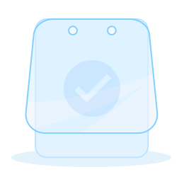

<ion-view title="查房" hide-nav-bar="true" class="patient-tag round">
    <ion-header-bar align-title="center">
        <div class="buttons">
            <button class="button-clear button ion-back" ng-click="back()">
                <i class="icon ion-ios-arrow-left"></i>
            </button>
        </div>
        <h1 class="title">查房</h1>
    </ion-header-bar>
    <ion-content>
        <div class="container" ng-show="taskList.length > 0">
            <h1 class="tip">请选择查房具体内容(多选)</h1>
            <div class="tag-box">
                <span ng-class="{active:(item.isAdd == 1),mr:(($index+1)%4 == 0)}" ng-repeat="item in taskList" ng-click="changeState(item)">{{item.taskTitle}}</span>
            </div>
        </div>
        <div class="no-data" ng-show="!taskList.length">
            
            <h1>没有任务</h1>
            <h2>请到PC端为此团队和流程添加任务</h2>
        </div>
    </ion-content>
    <ion-footer-bar ng-show="taskList.length > 0">
        <div class="row">
            <div class="col footer-buttons">
                <button class="button button-block" ng-click="finishRoundTask()">确定</button>
            </div>
        </div>
    </ion-footer-bar>
</ion-view>
